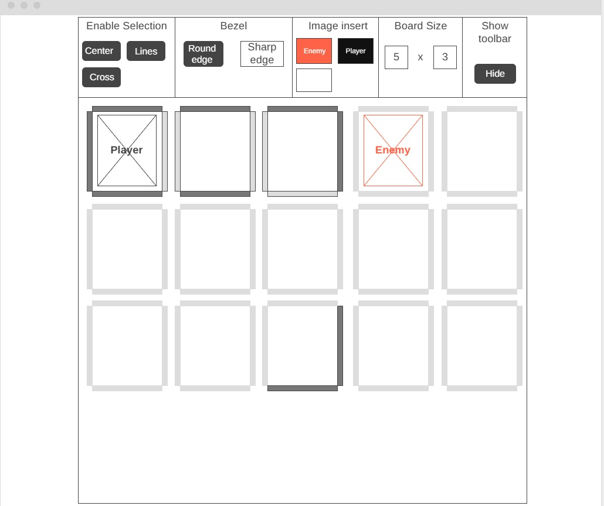

Overview
Purpose
The purpose of this app is to allow users to create custom maps for their D&D games. The site offers an interactive map editor.
Audience
My target audience is people who play D&D or similar games that use maps in this format and want to create custom maps for their games.
Dynamic elements
In Javascript, I will have buttons for adding and removing elements from the map. There is a toolbar at the top of the page that allows different tools for customization.
Branding
Website Logo
Style Guide
Color Palette
Palette URL: https://coolors.co/dad2d8-143642-0f8b8d-ec9a29-a8201a| Primary | Secondary | Accent 1 | Accent 2 | |
|---|---|---|---|---|
| [#DAD2D8] | [#143642] | [#0f8b8d] | [#EC9A29] | [#A8201A] |
Pseudocode for your project
Top toolbar is a row flexbox in the header. Buttons enable variable in js to change what happens when user clicks on items in the map.
The map is a grid of divs that can be clicked on to change it's characteristics. The board size determines the size of an array in js that holds the characteristics of each div. The array is used to save the map.
Wireframes
page 1:

Landing page
This will be the main page of the application.You enable items in the map when you click on them. Items have a dark outline when mouse hovers over them to show user interactibility.
[no other pages]
[]